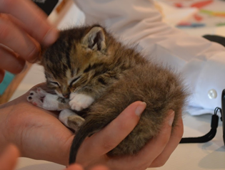

Biography
A hard start
Bucky had a hard start to life. He was found by my wife’s grandfather in their shed as a kitten. This was in the July heat of Utah and thankfully he was found and saved. We think he was the runt of his litter and was possibly abandoned by his mother. One theory is that he enjoys biting anything that is sticking out. His favorites are noses and ears.
Because of the possible heat stroke Bucky is a perma-kitten. At age 10 he still acts like he is a new kitten. This also caused his growth to be stunted as he weighs a total of 10 lbs.
The photo to the right is Bucky when he was a kitten. He fit into the palm of most people's hands at the time.
How Bucky became part of the family
After my wife’s grandfather found Bucky, he ended up at my wife’s family’s house. They were not planning to keep him long-term but My wife’s great grandmother had other Ideas. While taking family photos the great grandmother pulled bucky out of her shirt where she smuggled him to be a part of family photos. This solidified his place in the family. The below photo is my wife and her great grandmother at this event (permission was granted from my wife to post the photo and her great grandmother passed away last year).